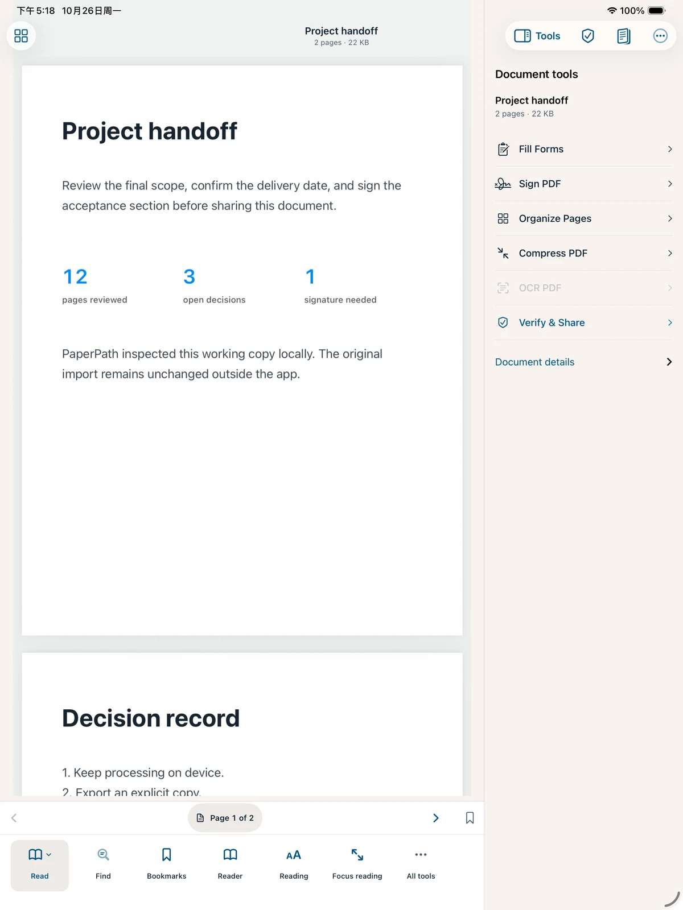
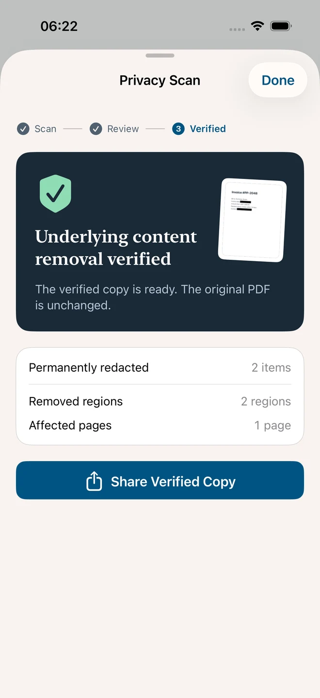
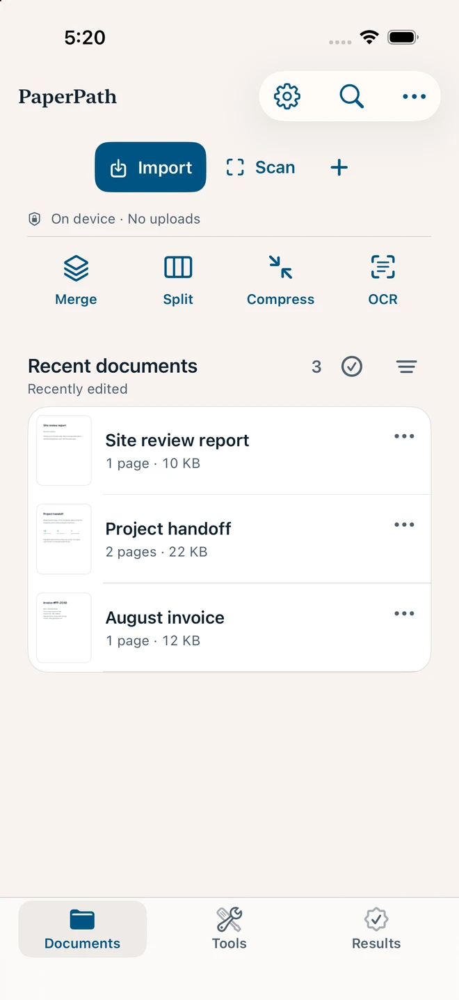
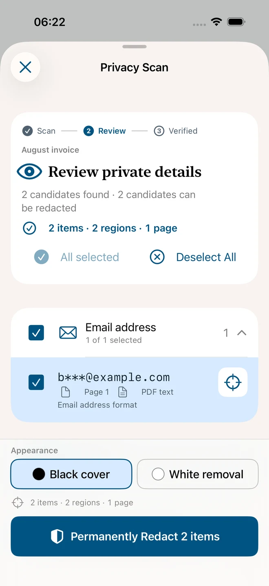
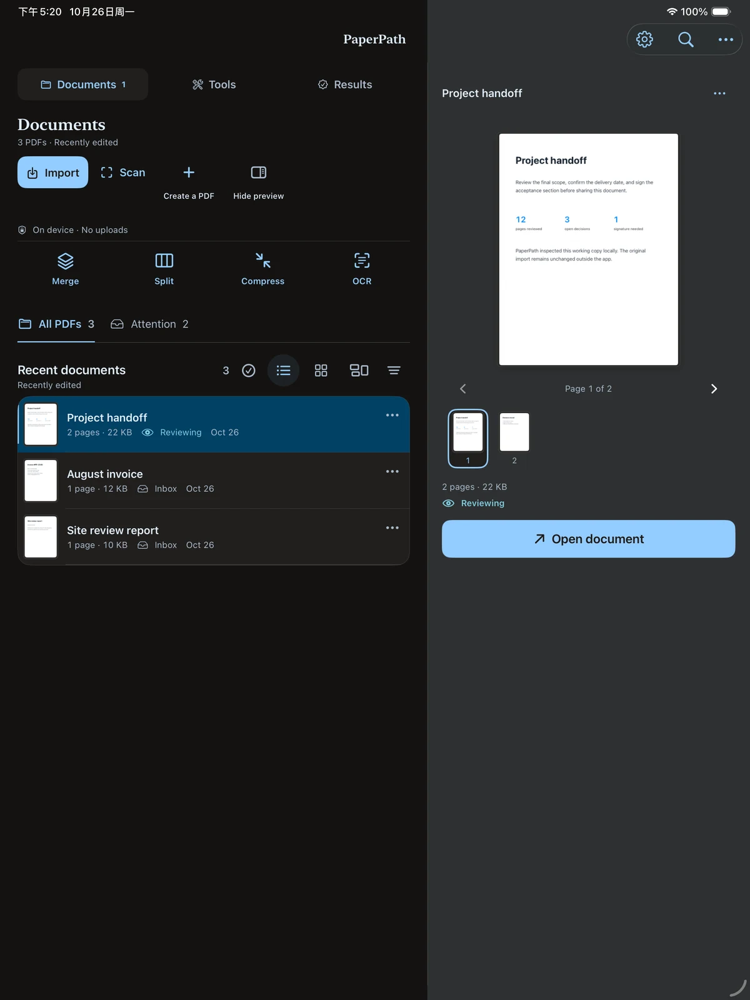

填寫與簽名
填寫受支援的表單，放置手寫簽名，新增註解與標記。
iPhone & iPad
在 iPhone 和 iPad 離線合併、分割、壓縮與 OCR。需要時也能填寫、簽名、隱私遮蔽，原始檔案保持不變。
即將登陸 App Store · 目前為預計首發價格


文件，始終由你掌控。
原檔，始終為你保留。
下一步，清楚就在眼前。
圍繞一份文件，走完一條流程。
一份待簽合約，一疊待辨識掃描文件，一份需要遮蔽的客戶資料。從匯入到交付，連貫完成。

從「檔案」匯入，或掃描紙本頁面。匯入 PDF 後建立本機工作副本。
PDF 匯入 · 多頁掃描填寫表單、放置簽名、整理頁序、辨識文字。圍繞目前文件，選擇真正需要的動作。
表單 · 簽名 · OCR · 頁面整理檢查隱私並預覽結果。Verified Output 會重新開啟產生的平面化副本，記錄文件檢查收據。
永久遮蔽 · 輸出預覽 · 交付收據要分享的文件，值得再看仔細。
在本機尋找支援類型的敏感資訊。回到原頁檢查候選項目，再決定哪些內容不該出現在分享副本裡。
候選項目按類型和頁面整理。回到 PDF 原頁，結合上下文逐項檢查。
檢查選取範圍與遮蔽樣式，確認後再建立永久遮蔽副本。
查看遮蔽結果和移除檢查。匯入前的原始 PDF 保持不變。
自動偵測可能遺漏資訊，分享前仍需人工檢查。影像型遮蔽或平面化副本可能不再保留可搜尋文字、連結、表單和可編輯圖層。文件檢查不認證內容、身分或法律合規。

把一份文件完成所需的工具。
填寫受支援的表單，放置手寫簽名，新增註解與標記。
檢查掃描頁，本機 OCR，建立可搜尋 PDF 副本。
合併、分割、排序、旋轉、裁切與壓縮文件。
匯出 Office、圖片或文字；使用結果前檢查排版。
給文件留出工作空間。
選擇工具時，文件依然在眼前。iPad 專用工作區給 PDF 更多空間；iPhone 讓下一步操作隨手可及。
原生 iPhone 與 iPad App，支援 iOS / iPadOS 17 及以上。Mac 支援尚未公布。

US$9.99
一次付費下載
即將登上 App Store
規劃中的美國區首發價格。各地區價格與供應情況以上架後的 App Store 為準。
核心 PDF 處理、OCR 和隱私偵測在本機執行。系統分享和可選 iCloud 中繼資料同步使用你選擇的服務；同步不包含 PDF 檔案。
它建立影像型平面化副本，重新開啟各頁並記錄文件檢查。它不認證內容準確性、簽署人身分或法律合規；平面化會移除可搜尋文字、連結、表單與可編輯圖層。
不需要。規劃以 US$9.99 一次付費下載，不另設 PaperPath Pro 解鎖。上架後可在 App Store 查看當地價格。
目前版本面向 iPhone 和 iPad。Mac 相容性尚未驗證，因此首發不承諾 Mac 支援。
私有文件庫不包含在裝置自動備份中，可選 iCloud 中繼資料同步也不備份 PDF。刪除 App 或更換裝置前，請先匯出重要文件。
合併、分割、壓縮與 OCR 都在本機執行。下載 App、Apple 購買與選用的 iCloud 中繼資料同步需要連線；分享或匯出可能將檔案傳送至你選擇的目的地。
在本機選取支援的未鎖定 PDF，拖動已選檔案調整順序，再建立合併副本。原始檔案保持不變；大型工作仍受資源保護上限限制。
可選清晰、平衡或緊湊三種品質，並查看取樣大小預估。壓縮會將頁面重建為影像，移除可搜尋文字、連結、表單與可編輯註解。若重建副本反而更大，會保留較小的原檔。
保留原檔，把分享的那份做好。
認識 PaperPath